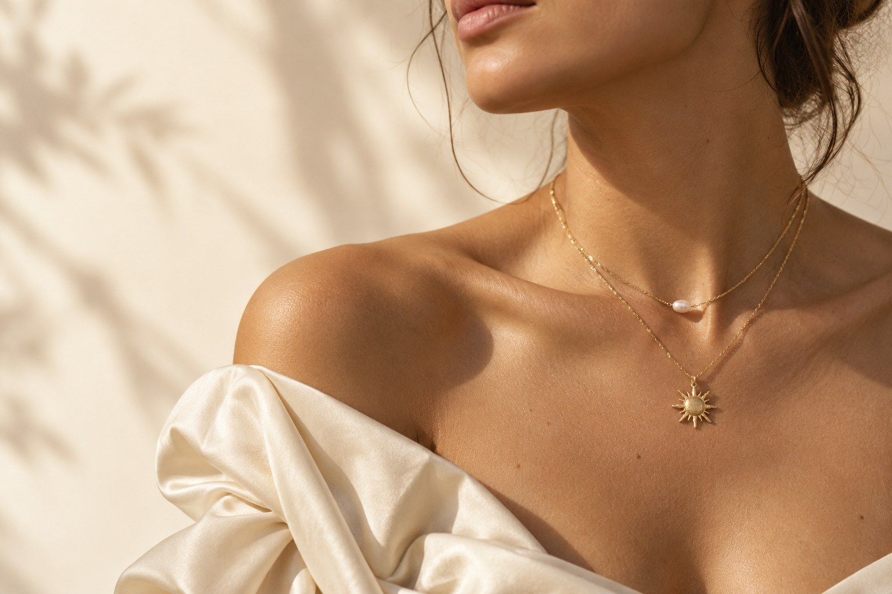
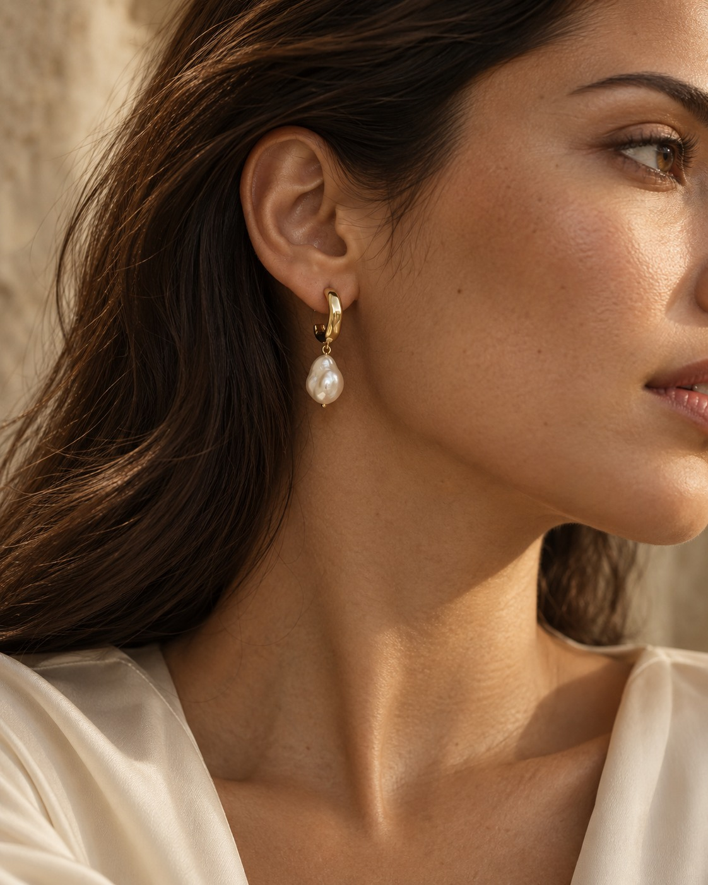

Componi. Guarda.
Ricomponi.
Cambia base, finitura e simboli. Ruota il gioiello e sposta i charm: l’anteprima segue le tue scelte.

Collane da comporre. Orecchini da scegliere d’istinto.
Una piccola luce, da sentire tua.
Una perla, una lettera, la curva di un orecchino.
La bellezza comincia da quello che senti.
Da indossare da sole.
Da far innamorare insieme.
Collezione concept · Fotografie e prezzi illustrativi. Le collane si personalizzano nell’atelier.
La luce di Soleil. La delicatezza di Aura.
Due piccoli gesti, lo stesso modo di sentirti.
Un gesto alla volta.
Guarda la tua storia prendere forma.
Concept dimostrativo. Nessun acquisto o pagamento viene effettuato. Anteprima 3D illustrativa.

LUNÉA MUSES / AURAIl gesto di raccogliere i capelli. Una camicia che ami. Quel gioiello che metti quasi senza pensarci.
I dettagli più belli non chiedono attenzione.
La fanno restare.
Cambia base, finitura e simboli. Ruota il gioiello e sposta i charm: l’anteprima segue le tue scelte.
Base, catena e ciondoli hanno prezzi separati. Il riepilogo mostra come nasce il totale della tua creazione.
Salva le composizioni sul tuo dispositivo, condividi il link oppure scarica la tua selezione.
Nel configuratore puoi comporre fino a cinque charm su collana o bracciale e modificarne l’ordine. Compatibilità, dimensioni e disponibilità dei componenti reali devono essere confermate dal venditore.
Oro, argento e rosé indicano qui la finitura visiva della simulazione, non un titolo di metallo prezioso. Leghe, placcatura, composizione delle perle e informazioni sulla sicurezza dovranno provenire dalle schede dei prodotti reali.
Il configuratore propone tre misure per ogni base. Misura una collana o un bracciale che indossi comodamente e usa il valore come riferimento; l’anteprima non è un sistema di prova virtuale in scala.
Questa è una demo di design e configurazione. Non raccoglie ordini o pagamenti e non spedisce prodotti. Per un negozio operativo occorrono catalogo reale, disponibilità, condizioni di vendita, spedizioni e gestione dei resi.
Preferiti e selezione restano nel browser su questo dispositivo. Il link condiviso contiene soltanto le scelte del gioiello. Puoi cancellare i dati locali dal pulsante qui sotto.